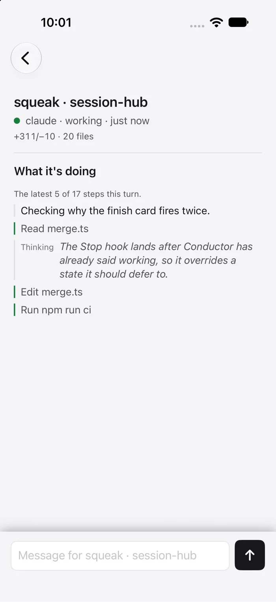

Hear the question. Answer by keypad.
For a waiting question or approval, Squeak can call your configured extension, read the prompt aloud and accept a keypad choice. An approval itself still needs your confirmation in the Mac or iPhone app.
Your Conductor attention inbox
See every Conductor chat in one attention-first inbox. Read the question, reply or steer the work, then keep up from your Mac, iPhone, Squeak for Web, Telegram or Zoho Cliq.
01 / Made for Conductor
Squeak is an independent companion to Conductor. It reads your chats into one attention-first inbox, puts questions and approvals up front, and sends your reply back to the right conversation.

Find chats that need you, are working, finished or hit an error, with the latest activity and message.
Answer a choice or write your own message. Squeak checks that the reply reached Conductor before showing it as sent.
Create a Conductor chat, queue a message for later, or steer a message into a running turn. Model and thinking controls stay in sync with Conductor.
With personal thanks to Charlie Holtz for building Conductor. Squeak is made independently by Sibhimanyu.
02 / Squeak for Mac
See sessions grouped by what they need from you: questions and approvals, finished work, active work, errors and idle sessions. Squeak also watches Claude Code and Codex sessions in supported local apps.

Sessions are grouped by state, across Conductor and supported local agent sessions.
The latest message and parsed choices. A recommendation is marked, never pre-selected.
The reply box routes your answer to this Conductor chat.
03 / Away from the desk
Pair an iPhone or use Squeak for Web in any browser to see your chats and reply while away. Telegram and Zoho Cliq can send cards and take replies too. Replies travel through Squeak on your Mac, which needs to be awake and running.

Squeak
storefront · payment-retries
needs an answer
How should temporary failures be retried?
3 files changed
A phone joins only after you approve it on the Mac. The iPhone app syncs through a Firebase project you create; free SideStore installs do not receive push notifications.
Replies go through your Mac, so it needs to be on with Squeak running.
Set up the iPhone app Installs through SideStore, oropen Squeak for Web—no install needed.
Optional / Phone calls
Connect Squeak to a SIP phone system when you want an audible prompt away from your screen. Calling is optional and requires a configured PBX connection.
For a waiting question or approval, Squeak can call your configured extension, read the prompt aloud and accept a keypad choice. An approval itself still needs your confirmation in the Mac or iPhone app.
Call Squeak’s extension, choose an available chat and dictate a message. Your Mac transcribes the recording locally, reads it back for confirmation, then sends it if the chat can still take a message.
Setup options: a direct SIP extension on your network or VPN, or a Home Assistant voice gateway for a Mac and PBX on separate networks. Configure SIP credentials and extensions yourself. Answering a call requires a PIN; calling in to dictate also needs Whisper and ffmpeg on the Mac.
05 / Supported sessions and privacy
Squeak can reply to Conductor chats through its relay. For Claude Code or Codex in Apple's Terminal, it types only when the right agent tab is active and ready. Other integrations are for monitoring.
A phone or browser joins after you approve it on the Mac.
Squeak checks which chat or tab is in front before it types.
A reply is confirmed in the chat, and never sent twice.
Each paired device signs its replies. They expire after ten minutes and can answer only the chat's current question.
Squeak identifies the target Conductor chat before sending. In Terminal, the supported Claude Code or Codex process must own the tab and show its empty prompt, so text does not land in a shell or over your draft.
A reply that may have gone is checked against the chat history. If Squeak cannot confirm delivery, it says so instead of retrying blindly.
| Where the agent runs | Watches | Replies |
|---|---|---|
| Conductor chatsTyped into Conductor's own window. | Yes | Yes |
| claude or codex in Apple's TerminalTyped into the agent's own tab. | Yes | Yes |
| Other local terminalsReplies work only in Apple's Terminal. | Yes | Watch only |
| Claude Desktop: Code and CoworkCowork cannot report an approval prompt. | Yes | Watch only |
| Codex app | Yes | Watch only |
06 / Install
Squeak 2.12.1 for Mac, as a disk image. It is free and ad-hoc signed rather than notarized, so macOS asks once before the first launch. After that, Squeak updates itself.
Open Squeak-2.12.1.dmg from your Downloads and drag Squeak onto Applications.
Right-click Squeak in Applications, choose Open, then Open again. If macOS still refuses, press Open Anyway in System Settings › Privacy & Security.
Squeak connects to Conductor and lists your chats. Replies from any device go through the Squeak service on your Mac, which must be awake and running.